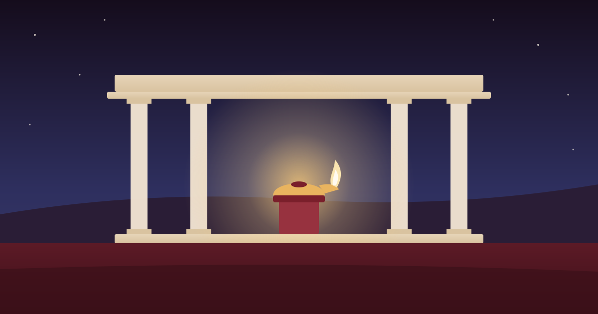

Um roteiro de leitura bíblica para os dias da festa da Dedicação, de 4 a 11 de dezembro de 2026, com contexto, perguntas e uma oração curta para cada noite.
Leonardo Paiva · A Tela do Reino · ateladoreino.com
Citações bíblicas: Almeida Revista e Corrigida (ARC).
Antes de começar
Hanucá é a festa judaica da Dedicação. Ela lembra a purificação e a nova consagração do Templo de Jerusalém em 164 a.C., depois que o rei Antíoco IV o profanou. A palavra hebraica hanukkah (חֲנֻכָּה) quer dizer "dedicação" ou "inauguração".
O relato histórico está em 1 Macabeus 4: a consagração foi no dia 25 do mês de Kislev, durou oito dias, com alegria, e ficou decidido que seria lembrada todo ano. Os livros dos Macabeus fazem parte da Bíblia católica e da ortodoxa; nas Bíblias evangélicas, como a ARC, são lidos como fonte histórica.
O conhecido "milagre do óleo", o pequeno jarro que teria durado oito dias, vem do Talmude (Shabbat 21b), escrito séculos depois. É tradição, não parte do relato dos Macabeus.
Hanucá 2026: do pôr do sol de sexta, 4 de dezembro, ao anoitecer de sábado, 12 de dezembro. As 8 noites deste roteiro vão de 4 a 11 de dezembro.
Foi ali, em plena festa, que perguntaram a Jesus se ele era o Cristo, e ele respondeu: "Eu e o Pai somos um" (João 10:30).
Como usar este guia
Você não precisa celebrar Hanucá para fazer este roteiro. Se quiser, acenda uma vela enquanto lê, como lembrete de que Jesus é a luz do mundo. Em família, cada noite uma pessoa diferente pode ler.
| 4/12 | João 10:22-30 · A festa e a pergunta |
| 5/12 | 1 Reis 8:22-30 · O primeiro Templo consagrado |
| 6/12 | Esdras 6:14-18 · O segundo Templo, com alegria |
| 7/12 | Daniel 11:31-32 · Firmes em tempos de pressão |
| 8/12 | Salmos 30 · O salmo da dedicação |
| 9/12 | João 9:1-7 · A luz do mundo |
| 10/12 | 1 Coríntios 6:19-20 · O templo que somos |
| 11/12 | Apocalipse 21:22-27 · A cidade iluminada |
1ª noite · sexta, 4/12
Leitura: João 10:22-30
João anota a festa e o inverno. O alpendre de Salomão era uma galeria coberta de colunas no pátio do Templo. Ali, as pessoas cercam Jesus: "Se tu és o Cristo, dize-no-lo abertamente" (João 10:24). Ele responde com as suas obras e com a imagem das ovelhas que ouvem a sua voz.
Para refletir: o que Jesus diz sobre as ovelhas que o seguem, e como isso fala da sua segurança hoje?
Senhor Jesus, quero ouvir a tua voz e seguir-te. Guarda-me na tua mão. Amém.
2ª noite · sábado, 5/12
Leitura: 1 Reis 8:22-30
Séculos antes dos Macabeus, Salomão consagrou o primeiro Templo. Diante do altar, ele estende as mãos para o céu e reconhece que nem os céus podem conter a Deus. O Templo era lugar de oração, não de prender a Deus num prédio.
Para refletir: o que a oração de Salomão mostra sobre a grandeza de Deus e a sua disposição de ouvir?
Deus de Israel, não há Deus como tu. Ouve a minha oração nesta noite. Amém.
3ª noite · domingo, 6/12
Leitura: Esdras 6:14-18
Depois do exílio na Babilônia, o povo reconstruiu o Templo. O texto diz que fizeram a consagração da Casa de Deus "com alegria" (Esdras 6:16). Foi esse segundo Templo, mais tarde ampliado, que os Macabeus purificaram e que Jesus conheceu.
Para refletir: o que Deus já restaurou na sua vida que merece ser celebrado com alegria?
Senhor, obrigado por recomeçar o que parecia perdido. Enche-me de alegria na tua presença. Amém.
4ª noite · segunda, 7/12
Leitura: Daniel 11:31-32
Daniel descreve forças a serviço de um rei que profanariam o santuário. Muitos intérpretes, judeus e cristãos, ligam o trecho a Antíoco IV, o rei da história de Hanucá. No meio da crise, o texto traz esperança: "mas o povo que conhece ao seu Deus se esforçará e fará proezas" (Daniel 11:32).
Para refletir: o que significa, na prática, "conhecer o seu Deus" quando a fé é pressionada?
Pai, quero te conhecer de verdade. Dá-me firmeza e coragem nos dias difíceis. Amém.
5ª noite · terça, 8/12
Leitura: Salmos 30
Na ARC, o título deste salmo é "Salmo e canção na dedicação da casa". É um cântico de quem foi tirado do fundo e agradece. Na tradição judaica, ele é recitado nos dias de Hanucá.
Para refletir: que "choro" já se transformou em alegria na sua história com Deus?
Senhor, eu te exalto, porque tu me levantaste. Que eu nunca me esqueça da tua bondade. Amém.
6ª noite · quarta, 9/12
Leitura: João 9:1-7
Hanucá é chamada também de festa das luzes. Pouco antes da Dedicação, Jesus cura um cego de nascença e diz: "Enquanto estou no mundo, sou a luz do mundo" (João 9:5). Ele já tinha dito "Eu sou a luz do mundo" na festa dos Tabernáculos (João 8:12).
Para refletir: em que área da sua vida você precisa que a luz de Jesus abra os seus olhos?
Jesus, luz do mundo, ilumina o que está escuro em mim e ensina-me a andar na tua luz. Amém.
7ª noite · quinta, 10/12
Leitura: 1 Coríntios 6:19-20
Paulo usa a imagem do Templo para falar de cada cristão: "o nosso corpo é o templo do Espírito Santo" (1 Coríntios 6:19). Se Hanucá lembra um Templo purificado e consagrado de novo, esta noite é um convite à rededicação pessoal.
Para refletir: que área da sua vida você quer consagrar de novo a Deus?
Espírito Santo, purifica o meu coração e faz de mim um lugar onde Deus é honrado. Amém.
8ª noite · sexta, 11/12
Leitura: Apocalipse 21:22-27
A Bíblia termina com uma cidade sem templo, porque o próprio Deus e o Cordeiro estão presentes. E ela não precisa de sol nem de lua: "a glória de Deus a tem alumiado, e o Cordeiro é a sua lâmpada" (Apocalipse 21:23).
Para refletir: como a esperança dessa cidade muda o jeito de viver os dias de hoje?
Senhor, obrigado porque a tua luz nunca se apaga. Que eu viva hoje na esperança do teu Reino. Amém.
Para encerrar
Senhor, assim como o Templo foi purificado e consagrado de novo, purifica o meu coração e consagra a minha vida a ti. Tu és a luz do mundo: que eu não ande em trevas, mas tenha a luz da vida. Ensina-me a conhecer-te e a permanecer firme quando a fé for pressionada. Em nome de Jesus. Amém.
Você recebe este guia porque se inscreveu na newsletter da A Tela do Reino. Todo domingo chega uma reflexão bíblica no seu e-mail, e você pode cancelar quando quiser.
Fontes: Bíblia ARC; 1 Macabeus 4 (fonte histórica); Talmude Babilônico, Shabbat 21b (tradição rabínica); datas de Hanucá 2026 conforme o calendário hebraico (Hebcal). Conteúdo devocional, redigido com apoio de IA e revisado.
Leonardo Paiva · A Tela do Reino